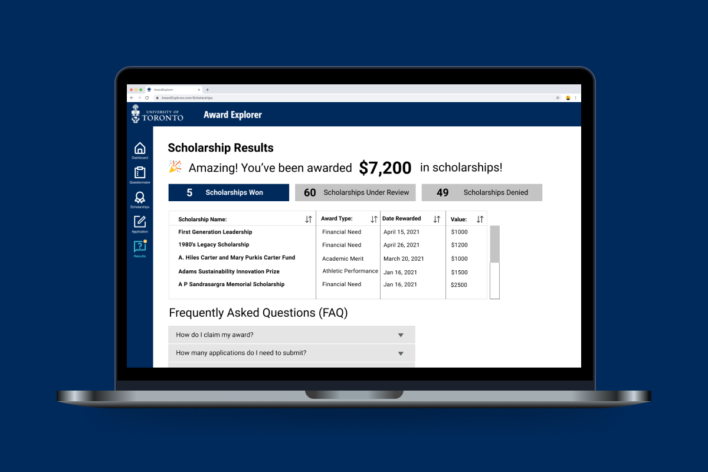
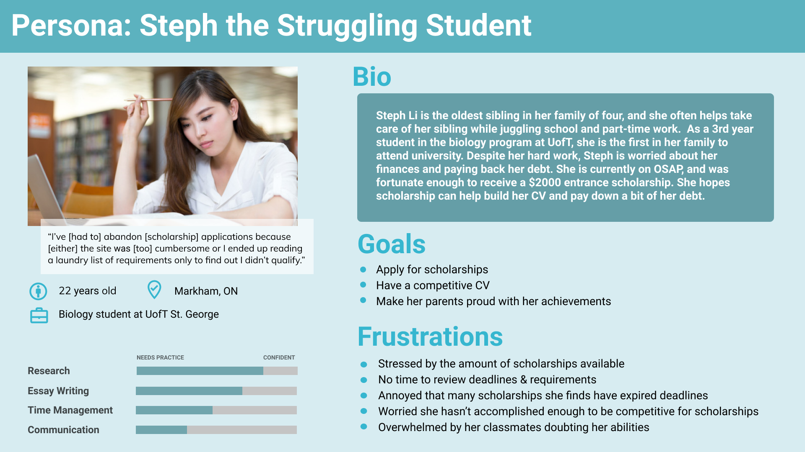

Award Explorer: Improving scholarships at UofT

Project Overview
- Client: Innovation Hub
- Role: User Research Lead
- Team: Bonnie Shao, Janice Cheung, Jenny Xue, Michael Do
- Skills: Qualtiative user research, affinity diagrams, semi-structured interviews, design thinking, rapid prototyping
- Tools: Figma, Mural
Problem
In Canada, millions of dollars in scholarships go unclaimed each year (GrantMe). The scholarship application process can often be a daunting and laborious experience for students, who have to fit applications in between assignments, part-time work, and other obligations.
As part of a course project in my Master’s program, my team worked with the Innovation Hub, a University of Toronto initiative that uses design thinking to improve student life through their 5 Domains of Innovation. We sought to improve the scholarship process to empower students to apply for scholarships more effectively and efficiently. In the Innovation Hub Domain of Access for Every Student, we wanted to make the scholarship process more accessible particularly for marginalized students.
Research
After deciding on what problem to tackle for this project, my team conducted secondary research as well as a survey and 6 semi-structured interviews. As the user research lead, I created the interview protocol, helped to recruit participants, transcribed interviews, and gathered key insights through affinity diagramming. I will walk through the interview findings below.
Participants were recruited through grassroots recruitment - asking friends, and friends of friends for their time. 30-minute interviews were conducted over Zoom and participants were compensated with hearty thanks. Participants were either in university or had graduated in the last 5 years from an Ontario university, had applied to scholarships at university, and identified as part of a marginalized group.
Affinity diagram of interview data, created in Mural
5 key insights gathered from our interviews were:
- Participants felt that scholarships were unattainable
- Participants felt that scholarships ignored the missing middle
- Lack of time and motivation influenced decisions not to apply to scholarships
- Difficulty in finding and applying for scholarships
- Lack of information about scholarships after 1st year
Our survey and secondary research corroborated these results, finding that the existing scholarship process was hard to use and that the value of scholarships was important to students, especially marginalised students.
Process
Armed with insights from our research, we refined the scope of our project to focus on the needs of our users. We created a persona, Steph, to further distill our user insights.

Steph, a reflection of our research participants
We also created hills statements, an IBM design process artefact, in order to anchor our design solutions around the needs of our users as well as the goals of our stakeholders.
Hills are like user needs - but with quantifiable results
Based on the current scholarship application process, we created a new to-be scenario that improved the future user journey.
Taking Steph's frown and turning it upside down
After reflecting on what our users needed, we brainstormed and sketched different ideas for what our solution should be. We created a prioritization grid of our ideas, ranking them on feasibility and impact.
Prioritization grids bring divergent ideas into a converging solution
Prototype
The solution we created was a one-stop shop for scholarships application. After a short questionnaire, users would be automatically matched with eligible scholarships. A single application would be filled out and users would automatically apply for most of the scholarships they are eligible for. Scholarships that required an additional application would be on the same platform and users would be notified of their scholarships on the platform as well. This is similar to existing scholarship processes at Ryerson University and George Brown College. You can view our clickable prototype on Figma.
The homepage displays the steps users can take as well as the status of their application
The questionnaire asks as few questions as possible in order to motivate users to continue the application process
Once they have submitted their questionnaire, they are automatically matched with eligible scholarships
Users can monitor their progress on the left sidebar and their work is automatically saved
After they submit their single application, users can also apply to additional scholarships that require more details
Users can track their applications and celebrate their achievements
Next Steps
Although our course project concluded at the medium fidelity stage, we received some useful user feedback on next steps to further refine our solution. Their suggestions were:
- Clarify that users only need to apply with the main application for submission to most scholarships
- Change labels like ‘single application’ and ‘award type’ to terms that are more clear to first-time users
- Make sure the notification system is more clear in the UI so users don’t feel they have to check the website everyday
Ultimately, the solution we came up with did not have particular features that catered towards marginalized students. This is because the problems marginalized students had with the scholarship application process were UX problems that affected every student. However, along with releasing an improved scholarship application system, it is important to promote among marginalized students the attainability of scholarships under the new system and to provide informational scholarship workshops that ensure marginalized students can receive the awards they deserve.

Meeting with the Awards Explorer team to share our work
We also shared our project with the current team at UofT who works on the digital scholarship process. They shared knowledge with us throughout the process and will be presenting our work and insights to the wider Awards team at UofT in order to inform their work in creating a new scholarship application system.